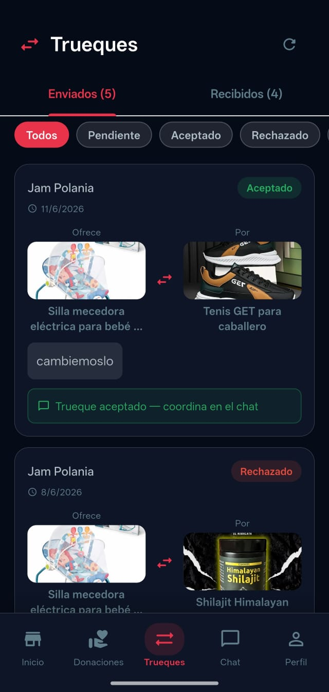

Los trueques te permiten intercambiar artículos sin dinero. Ideal para dar nueva vida a cosas que ya no usas.

Tus trueques enviados y recibidos con estado en tiempo real
Cómo proponer un trueque
1
Ve a la sección "Trueques"
Toca el ícono de trueques en la barra inferior de navegación.
2
Busca un artículo que te interese
Explora los artículos disponibles para trueque publicados por otros usuarios.
3
Toca "Proponer trueque"
Selecciona uno de tus artículos publicados para ofrecerlo a cambio.
4
Espera la respuesta
El otro usuario recibirá tu propuesta y podrá aceptarla, rechazarla o hacer una contrapropuesta.
5
Coordina el intercambio por Chat
Si aceptan, usen el chat para coordinar el punto y hora del intercambio.
💡 Tip: Para que tu artículo aparezca disponible para trueque, activa la opción "Aceptar trueques" al momento de publicarlo.
¿Puedo hacer un trueque con diferencia en dinero?
Eso queda entre los dos usuarios. Coordínalo por el chat de la app de manera segura.